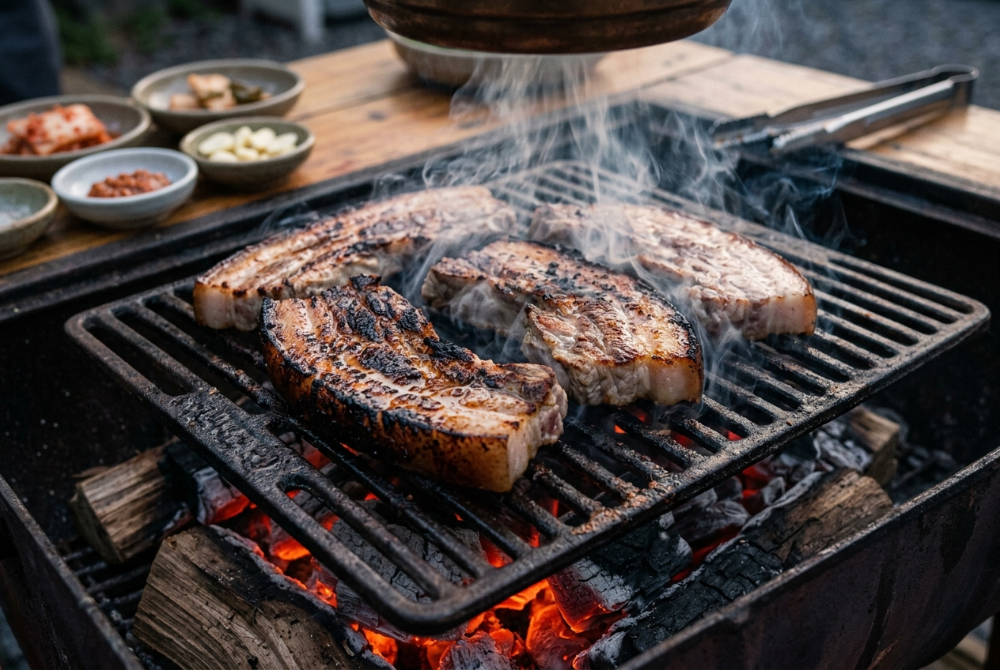
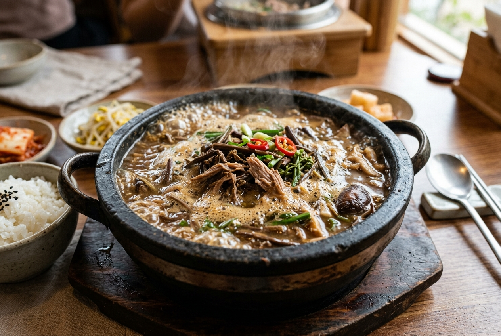
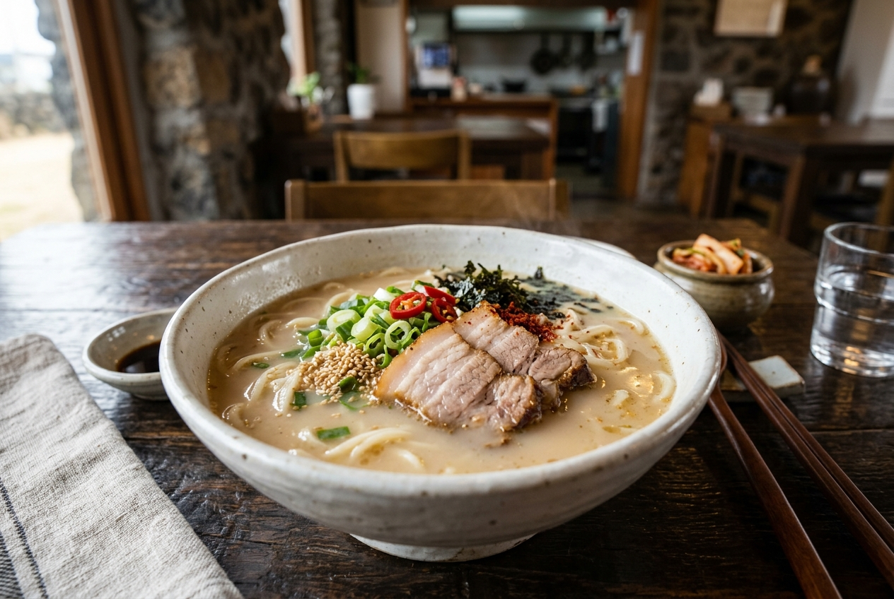
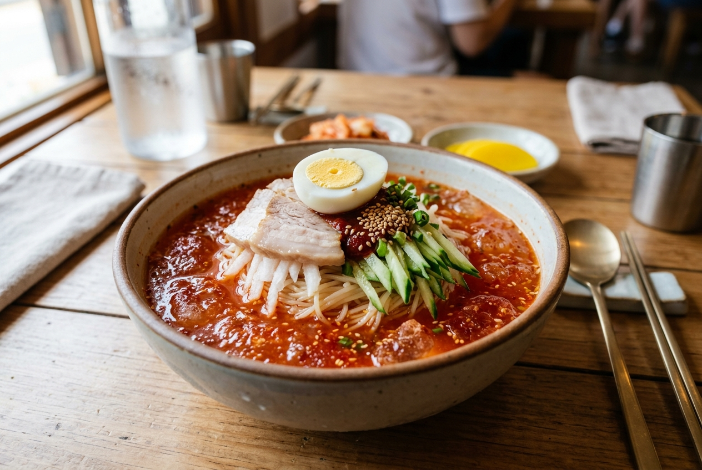
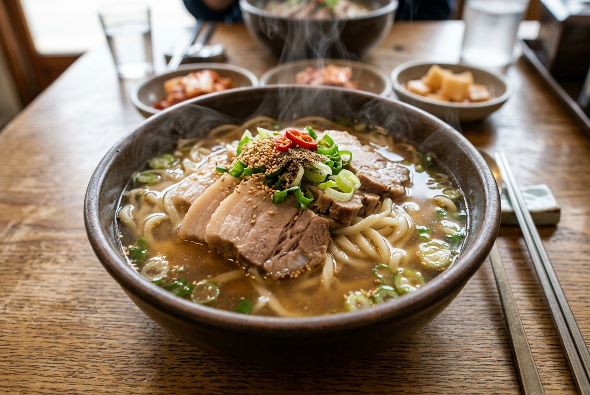
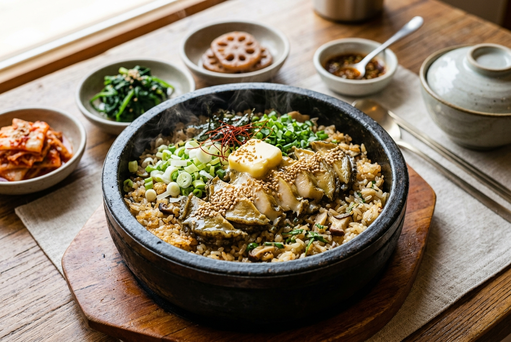
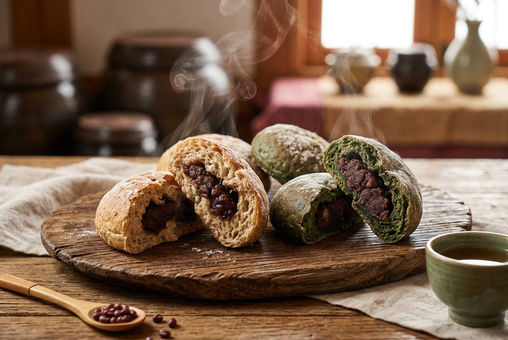
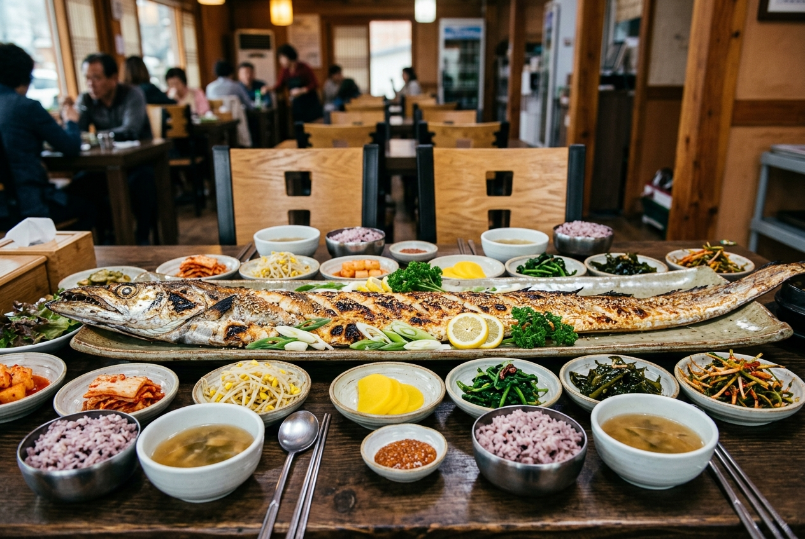
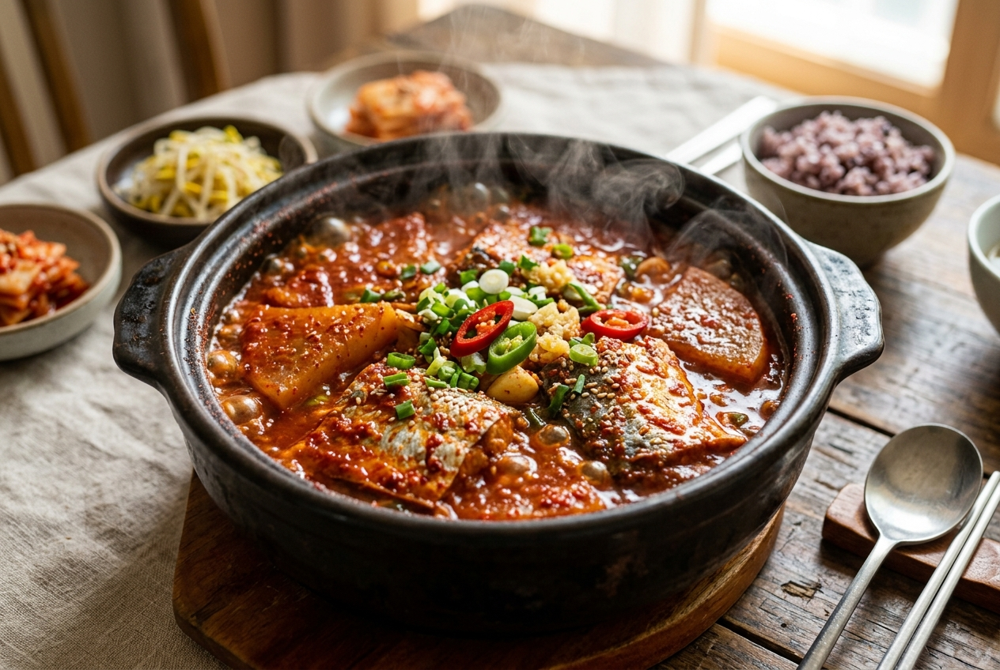
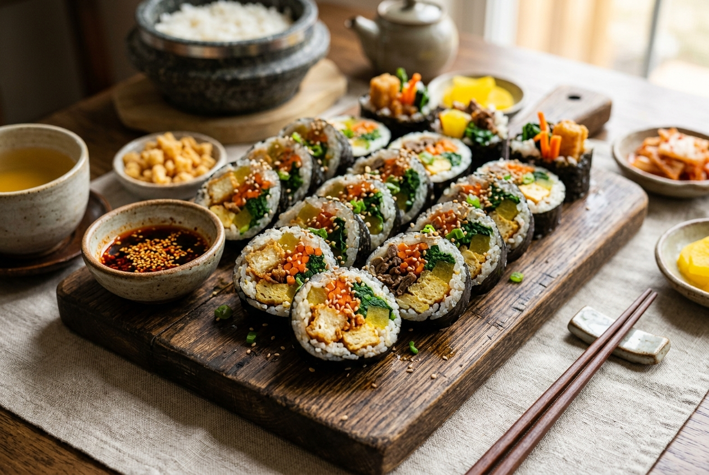

RANK 1

대표메뉴
흑돼지 삼겹살, 목살
특징
두툼하고 육즙 가득한 제주 흑돼지 전문점
RANK 2

대표메뉴
고사리육개장, 몸국
특징
고사리를 갈아 넣어 걸쭉하고 구수한 해장국 맛집
RANK 3

대표메뉴
고기국수, 비빔국수
특징
진한 사골 육수에 야들야들한 돔베고기를 얹은 국수
RANK 4

대표메뉴
제주식 밀냉면, 수육
특징
시원하고 쫄깃한 제주식 밀면과 부드러운 수육의 조화
RANK 5

대표메뉴
고기국수
특징
맑고 깊은 담백한 국물에 두툼한 고기가 듬뿍 들어간 맛집
RANK 6

대표메뉴
전복돌솥밥, 전복구이
특징
내장과 함께 지어 고소한 돌솥밥과 싱싱한 전복구이
RANK 7

대표메뉴
보리빵, 쑥빵
특징
옛날 방식 그대로 팥소가 들어간 구수한 보리빵
RANK 8

대표메뉴
통갈치구이, 갈치조림
특징
테이블을 가득 채우는 거대한 크기의 통갈치구이 전문점
RANK 9

대표메뉴
갈치조림, 고등어조림
특징
가성비 최고의 매콤달콤 밥도둑 갈치조림 전문점
RANK 10

대표메뉴
오는정김밥, 치즈김밥
특징
튀긴 유부가 씹히는 바삭하고 중독성 강한 김밥